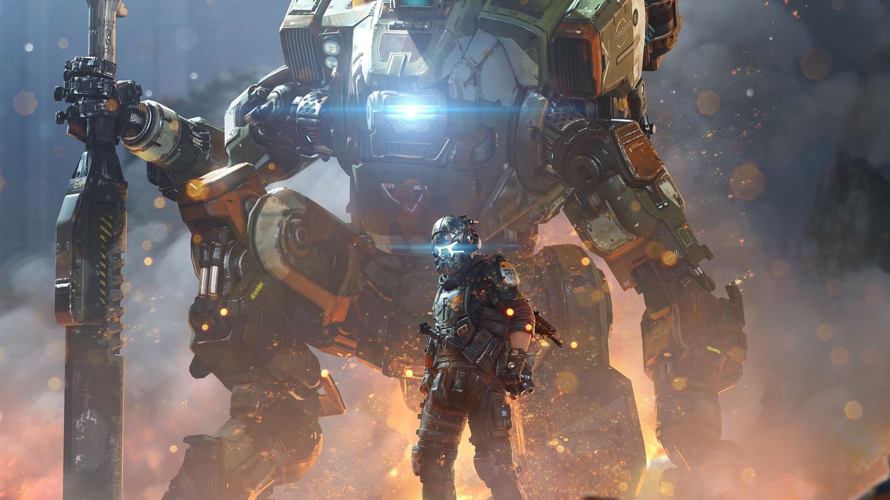
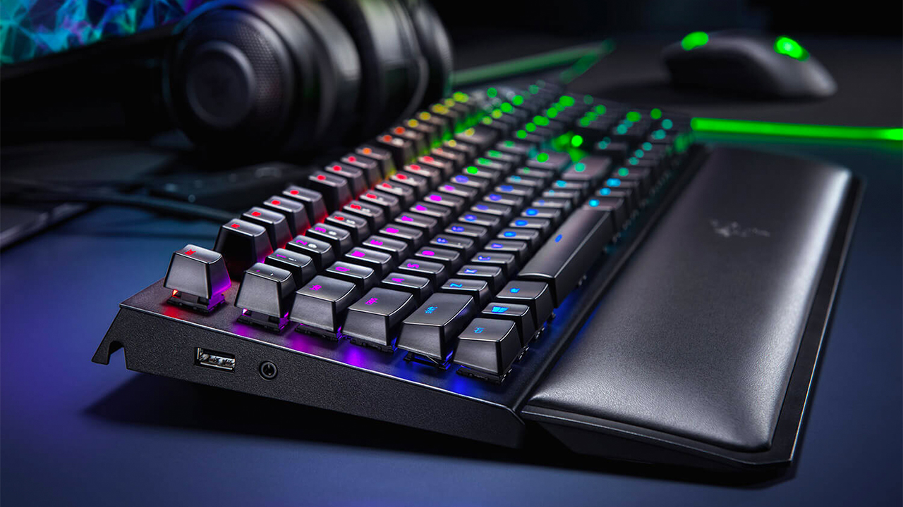
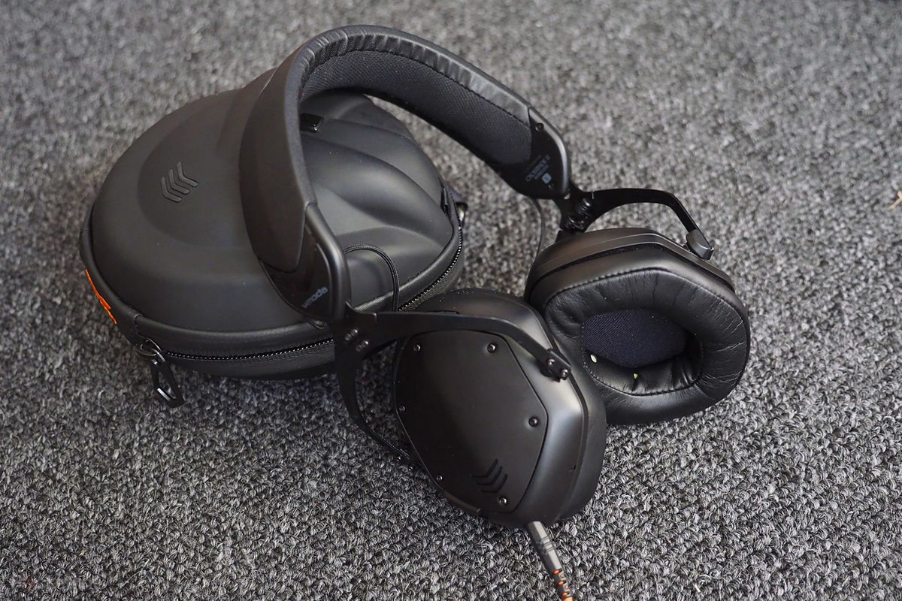

Gaming Gadgets For Better Gaming
Experience
Gamers Assemble!
1. Razer BlackWidow Elite: Esports Gaming Keyboard
Razer's BlackWidow Elite mechanical gaming keyboard is the best of its kind. It has a cool design, excellent build quality, and a plethora of features, headlined by the gaming giant's own mechanical switches. They have precise linear tactility and quiet operation. Razer's Synapse software suite allows you to customize the keyboard's functionality and RGB lighting. Dedicated multimedia keys are also among the key features of the Razer BlackWidow Elite.
2. Nintendo Switch

The Nintendo Switch can seamlessly transition from a mobile gaming device to a home gaming console by docking it into a station. With innovative Joy-Con controllers, a fun selection of games with iconic characters, and a great selection of accessories, the Switch has been incredibly popular since its launch, and for good reason.
3. Logitech G502 Lightspeed Wireless Gaming Mouse

The Logitech G502 Lightspeed wireless gaming mouse is an exciting new take on one of the company's most legendary products. Thanks to a cutting-edge HERO 16K sensor, the accessory is capable of delivering pro-grade performance in both wireless and wired mode. As expected, the gaming mouse has customizable buttons and lighting (via a software suite), as well as top-notch battery life. Best of all, gamers can charge the G502 Lightspeed wirelessly via an optional gaming pad, meaning they never have to deal with any cables.
4. V-MODA Crossfade 2 Codex Edition Wireless Headphones
The exceptionally crafted V-Moda Crossfade 2 Codex Edition wireless headphones are handily one of the most stylish offerings out there. You can make them your own via the company's signature customizable shields. The latter are available in a plethora of materials that range from polycarbonate to platinum.
5. Asus ROG Phone 2

Asus has announced a sequel to the ROG Phone (that stands for Republic of Gamers, for those new to the company's gaming brand) called the ROG Phone 2, and it's a massively powerful, giant-sized mobile gaming monster. The phone is due to launch in China on July 23, and the rest of the world from early September.